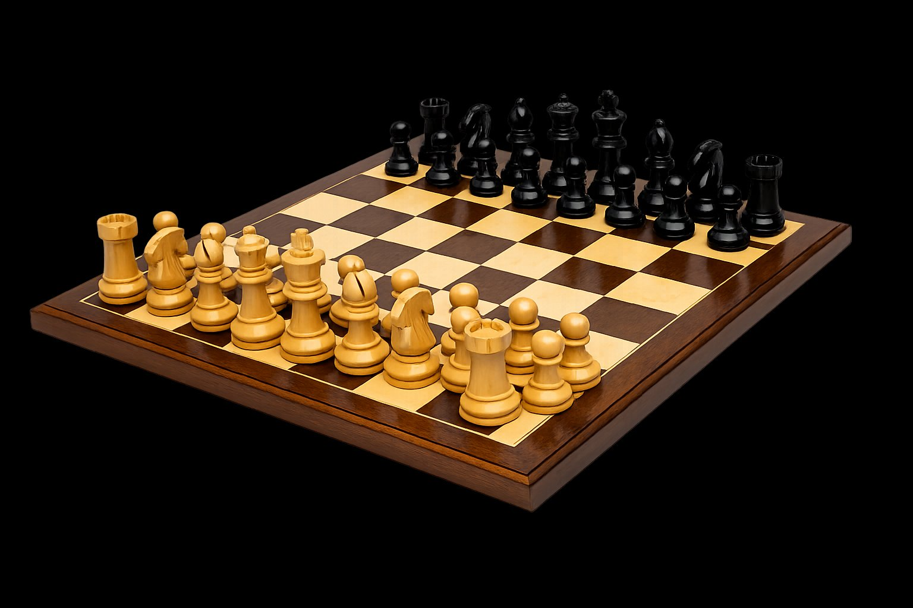

Boven het bord zweeft de graaf van alle paardensprongen — elk vakje een knoop, elke verbinding een legale sprong. De wiskunde achter het spel.
Verken openingstheorie als interactieve boom met transposities en commentaar.
BINNENKORT →Train je bordbewustzijn zonder bord — vakherkenning, paardenpaden, stukvisie.
BINNENKORT →Game trees in drie dimensies — voor wie de structuur achter de zetten wil zien.
BINNENKORT →Begrijp territorium, levensvormen en de basisstrategie van Go.
BINNENKORT →Nash-evenwicht, gemengde strategieën en het minimax-stelling visueel.
BINNENKORT →